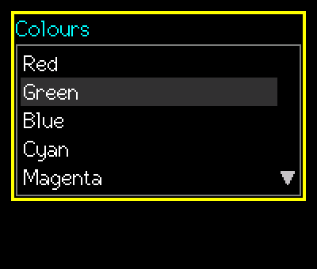
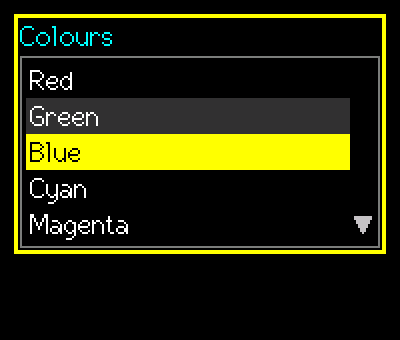
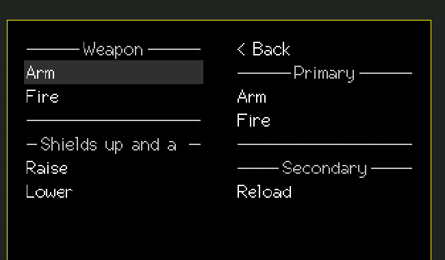

SuperListBox
A list of text items with a fixed number of visible rows.
Editable (modal edit)src/SuperListBox.h
What it looks like



Real renders from the library (headless, dark theme, Font2, shown at 2x).
Quick start
SuperListBox lb(&lcd, 10, 10, 160, &lgfx::fonts::Font2, 5 /*rows*/, &Enc, &BtnA, &BtnB);
lb.SetItems({"Red", "Green", "Blue", "Cyan", "Magenta", "Yellow"});
lb.SetSelected(1);Unique features
- Height = rows x (font height + 2 x
RowPad) + frame. - Selected row uses
ColSel/ColSelFg; the cursor row during editing usesColCursor/ColCursorFg. - Grey triangles at the right edge show hidden rows above / below.
Wrapmakes the cursor wrap at the ends.- Lists with 20 items or fewer step by sign only, so a fast spin never skips an item.
- Unclickable rows: an item
"~"is a separator line,"~Text"a heading with the text centred in the line (---- Text ----, dim; a heading that is too long is cut, always leaving about a character plus 3 pixels of line on each side:SuperSep::SIDE_CHARS/SIDE_PADinSuperSeparator.h), and"~~Text"an ordinary item that shows~Text. The cursor skips separators and headings (encoder and touch), they are never selected or accepted, and a list with nothing but such rows cannot be edited.
GUI workflow
Encoder moves the cursor (stops at the ends or wraps). A short/long accepts the cursor row as the selected item. B short cancels; B long moves the cursor back to the selected item and keeps editing.
Touch: the highlighted row is the one under the finger. Touching highlights at once; sliding moves the highlight; lift accepts. Holding above the first or below the last visible row auto-scrolls (AutoScrollMs, default 120). Lifting off to the side or tapping outside cancels.
Event workflow
edit contract. OnChange = the cursor moved; OnAccept = a row was chosen (GetSelected() is already new).
Main API
| Call | What it does |
|---|---|
AddItem / SetItems / ClearItems | Content |
SetSelected(i) / GetSelected() | Chosen index (-1 when empty) |
GetSelectedText() | Chosen text |
GetCursor() | Index under the cursor while editing |
SetRows(n) | Visible rows |
Tips and tricks
TipUse the live
OnChange for a preview of the item under the cursor.Pitfalls
Watch outAn empty list returns false from
StartEdit().